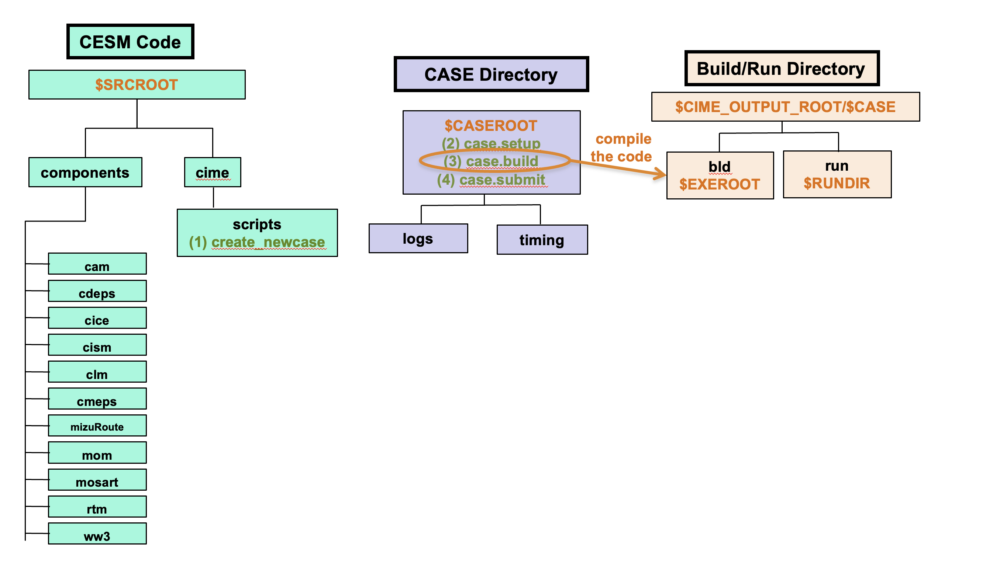

Case Build#
After a new case is setup, the tool that builds the new case by compiling the code is case.build. This tool is located in the $CASEROOT directory.
Running this script results in the following actions:
Checks and creates final component namelists
Builds individual model component libraries
Builds the final CESM model executable

Figure: Detailed view of the location of case.build
For the current tutorial on Derecho, the paths are:
$SRCROOT=/glade/u/home/$USER/code/my_cesm_code$CASEROOT=/glade/u/home/$USER/cases/$CASE$EXEROOT=/glade/derecho/scratch/$USER/$CASE/bld$RUNDIR=/glade/derecho/scratch/$USER/$CASE/run
Command Syntax#
You should still be in the CASEROOT directory after running case.setup
cd /glade/u/home/$USER/cases/CASE
Example case.build command:
qcmd -- ./case.build
NOTE: Do not enter the example above at the command line. You will create your first case in the Exercise at the end of this section.
Click here for example output
Building case in directory /glade/u/home/$USER/cases/b1850.basics
sharedlib_only is False
model_only is False
Generating component namelists as part of build
2026-06-30 21:11:19 atm
Create namelist for component cam
Calling /glade/u/home/$USER/my_cesm_code/components/cam//cime_config/buildnml
...calling cam buildcpp to set build time options
CAM namelist copy: file1 /glade/u/home/$USER/cases/b1850.basics/Buildconf/camconf/atm_in file2 /glade/derecho/scratch/$USER/b1850.basics/run/atm_in
2026-06-30 21:11:23 lnd
Create namelist for component clm
Calling /glade/u/home/$USER/my_cesm_code/components/clm//cime_config/buildnml
2026-06-30 21:11:24 ice
Create namelist for component cice
Calling /glade/u/home/$USER/my_cesm_code/components/cice//cime_config/buildnml
RUN: /glade/u/home/$USER/my_cesm_code/components/cice/bld/generate_cice_decomp.pl -ccsmroot /glade/u/home/$USER/my_cesm_code -res tx2_0v1 -nx 180 -ny 128 -nproc 256 -thrds 1 -output all
FROM: /glade/u/home/$USER/cases/b1850.basics
output: 180 128 5 4 5 sectrobin square-ice
2026-06-30 21:11:24 ocn
Create namelist for component mom
Calling /glade/u/home/$USER/my_cesm_code/components/mom//cime_config/buildnml
2026-06-30 21:13:08 rof
Create namelist for component mosart
Calling /glade/u/home/$USER/my_cesm_code/components/mosart//cime_config/buildnml
2026-06-30 21:13:08 glc
Create namelist for component dglc
Calling /glade/u/home/$USER/my_cesm_code/components/cdeps/dglc/cime_config/buildnml
2026-06-30 21:13:08 wav
Create namelist for component ww3
Calling /glade/u/home/$USER/my_cesm_code/components/ww3//cime_config/buildnml
Running /glade/u/home/$USER/my_cesm_code/components/ww3//cime_config/buildnml
ww3_grid file not found. The mod_def.ww3 file will be created after the build phase.
2026-06-30 21:13:08 esp
Create namelist for component sesp
Calling /glade/u/home/$USER/my_cesm_code/cime/CIME/non_py/src/components/stub_comps_nuopc/sesp/cime_config/buildnml
2026-06-30 21:13:08 cpl
Create namelist for component drv
Calling /glade/u/home/$USER/my_cesm_code/components/cmeps/cime_config/buildnml
Writing nuopc_runconfig for components ['CPL', 'ATM', 'LND', 'ICE', 'OCN', 'ROF', 'GLC', 'WAV']
libs from case_support_libraries ['gptl', 'pio', 'csm_share', 'FTorch', 'CDEPS', 'FMS']
Building gptl with output to file /glade/derecho/scratch/$USER/b1850.basics/bld/gptl.bldlog.260630-211117
Calling /glade/u/home/$USER/my_cesm_code/cime/CIME/build_scripts/buildlib.gptl
Component gptl build complete with 2 warnings
Building pio with output to file /glade/derecho/scratch/$USER/b1850.basics/bld/pio.bldlog.260630-211117
Calling /glade/u/home/$USER/my_cesm_code/cime/CIME/build_scripts/buildlib.pio
Building csm_share with output to file /glade/derecho/scratch/$USER/b1850.basics/bld/csm_share.bldlog.260630-211117
Calling /glade/u/home/$USER/my_cesm_code/share/buildlib.csm_share
Component csm_share build complete with 66 warnings
Build script /glade/u/home/$USER/my_cesm_code/libraries/FTorch/buildlib for component FTorch not found.
Building CDEPS with output to file /glade/derecho/scratch/$USER/b1850.basics/bld/CDEPS.bldlog.260630-211117
Calling /glade/u/home/$USER/my_cesm_code/components/cdeps/cime_config/buildlib
Component CDEPS build complete with 87 warnings
Building FMS with output to file /glade/derecho/scratch/$USER/b1850.basics/bld/FMS.bldlog.260630-211117
Calling /glade/u/home/$USER/my_cesm_code/libraries/FMS/buildlib
Component FMS build complete with 96 warnings
- Building clm library
Building lnd with output to /glade/derecho/scratch/$USER/b1850.basics/bld/lnd.bldlog.260630-211117
Component lnd build complete with 383 warnings
clm built in 86.210938 seconds
- Building atm Library
Building atm with output to /glade/derecho/scratch/$USER/b1850.basics/bld/atm.bldlog.260630-211117
- Building ice Library
Building ice with output to /glade/derecho/scratch/$USER/b1850.basics/bld/ice.bldlog.260630-211117
- Building ocn Library
Building ocn with output to /glade/derecho/scratch/$USER/b1850.basics/bld/ocn.bldlog.260630-211117
- Building rof Library
Building rof with output to /glade/derecho/scratch/$USER/b1850.basics/bld/rof.bldlog.260630-211117
- Building glc Library
Building glc with output to /glade/derecho/scratch/$USER/b1850.basics/bld/glc.bldlog.260630-211117
- Building wav Library
Building wav with output to /glade/derecho/scratch/$USER/b1850.basics/bld/wav.bldlog.260630-211117
dglc built in 1.225022 seconds
Component rof build complete with 18 warnings
mosart built in 11.746946 seconds
Component ocn build complete with 374 warnings
mom built in 151.207934 seconds
Component wav build complete with 78 warnings
ww3 built in 161.068473 seconds
Component ice build complete with 99 warnings
cice built in 329.401275 seconds
Component atm build complete with 1016 warnings
cam built in 339.333318 seconds
Building cesm from /glade/u/home/$USER/my_cesm_code/components/cmeps/cime_config/buildexe with output to /glade/derecho/scratch/$USER/b1850.basics/bld/cesm.bldlog.260630-211117
Component cesm exe build complete with 51 warnings
Total build time: 1001.744520 seconds
MODEL BUILD HAS FINISHED SUCCESSFULLY
Notes:
Notice the
./before any command run in the CASEROOT.On NCAR HPC machines, you must call the
case.buildusingqcmdbecause it compiles the model on a compute node, rather than a login node. This reduces the load on login nodes and prevents a timeout while you are building the model.The output tells you if it was successful at the end:
MODEL BUILD HAS FINISHED SUCCESSFULLY
Tips#
To completely rebuild a case, run
./case.build --clean-allfirst before building the model.If you want to make any source code modifications in
SourceMods, do this before building the model. We will coverSourceModsin a later section.If you want to make any modifications to
env_build.xml, do this before building the model.If any input data is missing the build will abort but provide a list of missing files. To acquire missing data run
./check_input_data --download. This will download the required data and put it in theinputdatadirectory defined by the XML variableDIN_LOC_ROOT. After you have done these steps you can re-run thecase.buildscript.